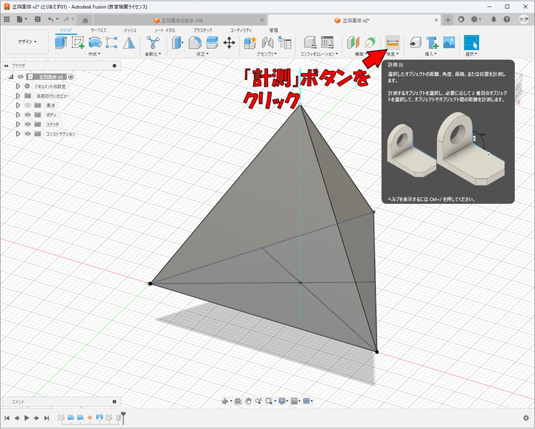

FusionCADの使い方
正四面体の接手のモデリング
目次
製作物の説明
今回はこの画像のような、正四面体を組み立てるための接手の部品をFusionCADを用いてモデリングしていきます。
正四面体の立体角の取得
まず正四面体の3DモデルのSTEPファイルをインターネット上で探してダウンロードしてFusionにアップロードするか、
正四面体をモデリングする手順をネットで調べてモデリングしてください。
参考になりそうなWebサイトを下記にいくつか置いておきます。
AUTODESKサポートサイト↓
https://forums.autodesk.com/t5/fusion-ri-ben-yu/si-mian-tiwo-zuoru/td-p/7113901
足立製作所研究開発工房正四面体の作り方↓
https://www.ard-workshop.com/post/regular-tetrahedron
【動画】 ろく fusion360で正四面体を作る↓
https://www.youtube.com/watch?v=5_DG89Lq5Ng
【動画】 メイカーズクラブ 【脳トレ#1】サーフェイスで正四面体を作る-Fusion360↓
https://www.youtube.com/watch?v=QfTXUD2JBmk
GRABCAD COMMUNITY 3Dモデルのファイルをダウンロードできるサイト↓
https://grabcad.com/library?page=1&time=all_time&sort=recent&query=tetrahedron
正四面体が用意できたら、正四面体の接手をモデリングするための立体角を取得します。
よくわからないかもしれないですが、作業を進めていくうちに理解が進むかと思います。
まず正四面体の底面の中央の点を作図します。「スケッチを作成」ボタンを押して底面をクリックしてください。
スケッチを行う画面になったら、まず「プロジェクト」を作成します。
この作業を行っておくと、作図する際に今既にあるモデルの頂点や辺を選択できるようになるので便利です。
できたら、「線」作成ボタンを押して、頂点と対辺の中点を結ぶ線を２本スケッチする。
２本線が引けたら、「点」作成ボタンを押して、線の交点に点を作図します。この点が正三角形の面の中央の点になります。点ができたらスケッチ終了します。
次に、今作図した面の中央の点と、その向かい側の頂点を結ぶ軸を作成します。
「構築」メニューを開いて、「２つの点を通過する軸」をクリックしてください。
先ほどスケッチした点と、その向かい側の頂点の２点をクリックして選択した後に、OKを押すと、軸が生成されます。
立体角を測定するために「計測」ボタンをクリックしてください。

先ほど生成した軸と、上側３本の辺の内の一つをクリックして選択すると、２本の線間の角度が表示されます。
この角度は、また少し先の作業で必要になります。今はコピーする必要はありません。
接手部品のモデリング
接手のモデリングを行うので、ファイルから新規デザインを作成してください。
円柱のモデリング
まず、この接手部品を作るための材料は直径が25mm、長さが60mmの円柱なのでそれをモデリングします。
原点を表示して、スケッチボタンをクリックして、XY平面をクリックしてください。
すると、XY平面にスケッチを行う（２次元の絵を描く）画面になります。
ツールバーから「円」ボタンをクリックした後に、円の中心点をクリックして、適当な場所をクリックすると円を描くことができます。
次に、ツールバーから「スケッチ寸法」ボタンをクリックして、さっき描いた円をクリックして、適当なスペースをクリックすると、円の直径を入力できます。
直径25mmの円柱をモデリングしたいので、「25」と打ち込んでエンターキーを押してください。
すると、直径25mmの図が描けるので、「スケッチを終了」を押すとスケッチが作成されて、スケッチをする画面から通常の画面に戻ります。

次に、今描いた円を、Z方向に「押し出し」を行って、円柱にします。「押し出し」ボタンを押して、さっき描いた円を選択してください。
押し出す長さを打ち込むボックスが出現するので、円柱の長さを入力してください。今回は長さ60mmの円柱をモデリングするので「60」と入力してエンターキーを押してください。
（ここですこし注意事項です）操作中に、描いた円が消えたときは、スケッチが消えたわけではなくて、非表示になっているだけの可能性が高いので
「スケッチ」のツリーを開いてさっき描いたスケッチが非表示になっていないか確認してください。目のイラストに斜線が入っていたら非表示になっています。
クリックして表示させてください。
円柱を部品の形にしていく
元々の材料の形である円柱ができたので、次に棒が刺さる穴を開けていきます。
少し特殊な穴の開け方をしますが、今回のこの部品の形状をモデリングする場合ではこのような方法の方が都合がいいので、
3DCADの様々な使い方を学べるということでご了承ください。
先ほどと同じくまたスケッチを作成します。スケッチボタンを押して、今度はYZ平面（XZ平面でもOK）をクリックしてください。
今から描くスケッチは少し難しいです。まず最終的に完成する図を以下の図に示します。
まず線ボタンをクリックして、円柱の軸から図のように線を引きます。
線の下端の点を円柱の中心軸上（x=0,y=0）に固定したいです。このように点や辺などの場所や動きをある程度限定したい場合は、「拘束」という機能を使います。
「拘束」という便利な機能
3DCADの作図で使える「拘束」という機能について軽く解説をしておきます。
拘束を使うと選択した点と点をくっつけたり、選択した点を線や辺の上に拘束したり、複数の線の長さが等しくなるように拘束したりすることができます。
拘束は、画面上のツールバーの拘束のメニューを開くと全てのボタンが出てきます。使いたい拘束をクリックしてから、複数の点や線などをクリックすることで
拘束を追加することができます。
下の画像に、よく使う便利な拘束をまとめておきました。自由に使ってみてどんなものなのか直観的に理解しておくと作業が格段にしやすくなります。余裕があれば頑張ってみてください。

今回は選択した２つの点をくっつける「一致」という拘束を使います。画面上のツールバーの拘束の中から「一致」ボタンを押して、今引いた線の下端の点と青色の
Z軸をクリックしてみてください。そうすると線の下端の点がZ軸上に拘束されて、上下方向にしか動かなくなります。
次に、最初に作った正四面体のモデルのファイルを開いて、計測を使って画像の角度を測って、クリックしてクリップボードにコピーしてください。
そうしたらまた接手のスケッチ途中のファイルに戻ってきて、スケッチ寸法で描いた線とZ軸を
クリックして２つの間の角度にさっきコピーした正四面体の立体角をペーストしてください。
次は「線」ボタンをクリックして、図のように四角形を書いてください。
寸法は後から指定するので適当でよいです。角が直角になるようにしてください。
最後に各線や点の寸法を入力していきます。下の図と同じように寸法を入力してください。
「スケッチ寸法」ボタンをクリックした後、線をクリックすると線の長さを、２つの点や辺と点をクリック
すると２つの間の距離を入力できます。
図で25mmとなっている所は、四角形が円柱よりはみ出ていて、最初に引いた線より短くなって
いれば何mmでも構いません。

スケッチが完成したので「スケッチを終了」をクリックしてください。
今のスケッチで書いた四角形を回転させて、円柱形の斜めの穴をあけます。
「回転」ボタンを押して、回転させる面を選択してください。
次に回転軸を選択します。「軸」と書かれた右の選択ボタンをクリックしてからさっきのスケッチで
一番最初に描いた線をクリックしてください。
できたら、下の画像と同じようになっているかを確認して、OKボタンを押してください。
棒が差し込まれる穴が１つ開きました。
今開けた穴を３つに増やします。
「パターン」ボタンをクリックして、出てきたメニューウインドウで「円形状パターン」ボタンをクリック
して、オブジェクトタイプを「フィーチャー」に切り替えてください。
オブジェクトと書かれた右の選択ボタンをクリックしてから、画面の左下にある今までの操作の履歴の中から
さっきの回転をクリックして選択してください。
次に「軸」と書かれた右の選択ボタンをクリックして、Z軸をクリックしてください。
そのままでは、Z軸が円柱に隠れてクリックできないと思うので、マウスホイールでカメラをズームアウトしてから
Z軸をクリックしてみてください。
「数量」の値が３になっていることを確認して、OKボタンをクリックしてください。
またスケッチします。さっきスケッチしたのと同じ面でスケッチを開始してください。
またここでもまず「プロジェクト」を使います。スケッチがしやすくなります。
円柱の側面と、１つ目の穴の底面をクリックしてから、OKをクリックしてください。
図に示すボタンを押すと、スケッチの正面から見た向きに画面が戻ります。
先ほどプロジェクトで生成した補助線がうすむらさき色で現れているはずです。
線ボタンをクリックして、画像のような三角形を描いてください。
左上の角が一致するように描いてください。
平行に拘束するボタンをクリックして画像のように、穴の底面を示す線と今書いた三角形の斜辺
の２つをクリックして平行に拘束してください。
今平行にした２つの線の間の距離を7mmに指定します。スケッチ寸法ボタンをクリックして、
２つの辺をクリックして、7と入力してください。
これでこのスケッチは完成なので、スケッチを終了してください。
次に「押し出し」ボタンをクリックして今スケッチした三角形の面をクリックしてください。
その後、押し出しのメニューウインドウから、「方向」と書かれた右のボックスをクリックして、
方向のメニューを開き、「対称」をクリックしてください。
こうすると、選択した面から左右対称に押し出すようになります。
「距離」の右のテキストボックスに適当な値を入力して、円柱全体が削れるようにしてください。
「操作」と書かれた右のボックスが、「切り取り」になっていることをかくにんしてください。
OKをクリックすると、円柱が斜めに切り取られます。
今の押し出しで削ったのを、穴と同じようにパターンで複製します。
穴を増やしたときと同じく、パターンボタンを押して円形状パターンをクリック。オブジェクトタイプの
メニューを開いてフィーチャーを選択してください。
オブジェクトと書かれた右の選択ボタンをクリックしてから、画面の左下にある今までの操作の履歴の中から
さっきの押し出しをクリックして選択してください。
次に「軸」と書かれた右の選択ボタンをクリックして、Z軸をクリックしてください。
そのままでは、Z軸が円柱に隠れてクリックできないと思うので、マウスホイールでカメラをズームアウトしてから
Z軸をクリックしてみてください。
「数量」の値が３になっていることを確認して、OKボタンをクリックしてください。
今形を作った部品を円柱から切り離します。
部品の底面の位置を決めるのに必要な軸を生成します。「構築」の中から「円柱/円錐/トーラスを通過する軸」
をクリックして、さっき開けた穴を１つクリックしてOKをクリックしてください。
もう一つの穴にも軸を生成してください。生成する軸は合計で２本で構いません。
またスケッチを行います。スケッチボタンをクリックして平面をクリックしてください。
またプロジェクトで、さっき生成した２本の軸と、円柱のプロジェクトを生成してください。
視点を正面に戻して、線ボタンをクリックして、さっき生成した軸の内、短いのを延長する線を引いてください。
四角形ボタンをクリックして、画像のあたりに適当な四角形を描いてください。
一致拘束ボタンをクリックして、今書いた四角形を画像のように各点の上に拘束してください。
スケッチ寸法ボタンをクリックして、四角形の高さを5mmにしてください。
これでこのスケッチは完成なので、スケッチを終了してください。
押し出しをクリックして、今描いた四角形をクリックしてください。
円柱を斜めにカットした時と同じく、方向を対称に切り替えてください。
距離は、円柱が全て切断される適当な値（12.5mm以上）の値を入れて、
操作が切り取りになっていることを確認してOKをクリックしてください。
お疲れさまでした！これにて部品のモデリングは終了です！次のテキストに進んで、CAMでの操作を行ってください。